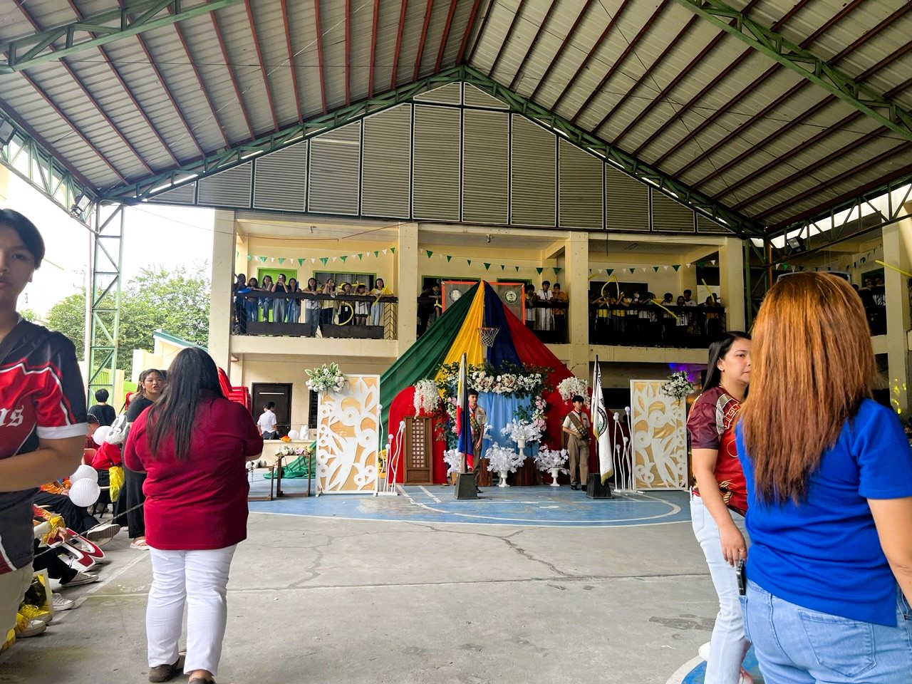
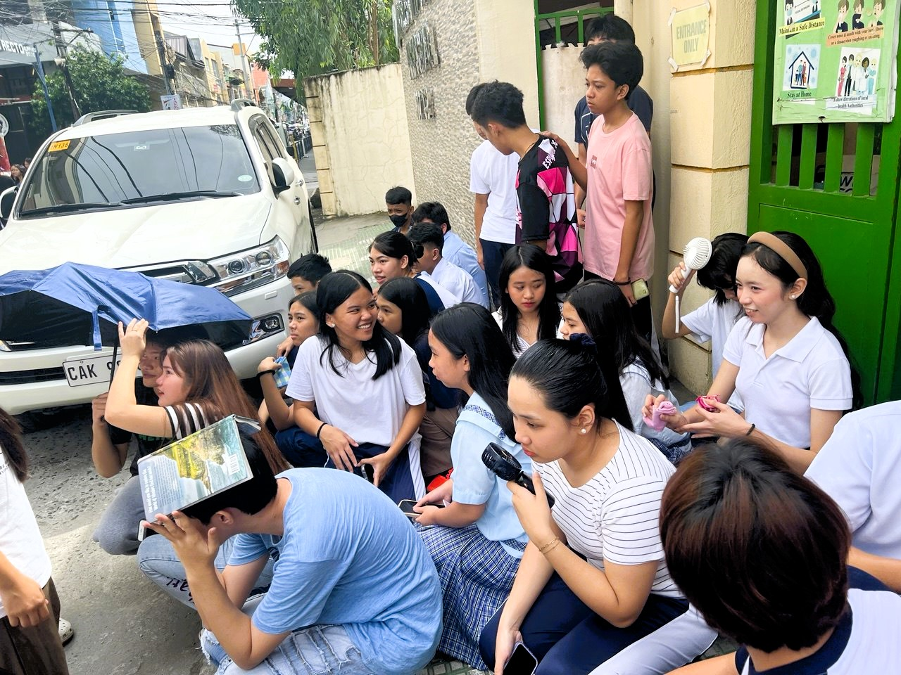
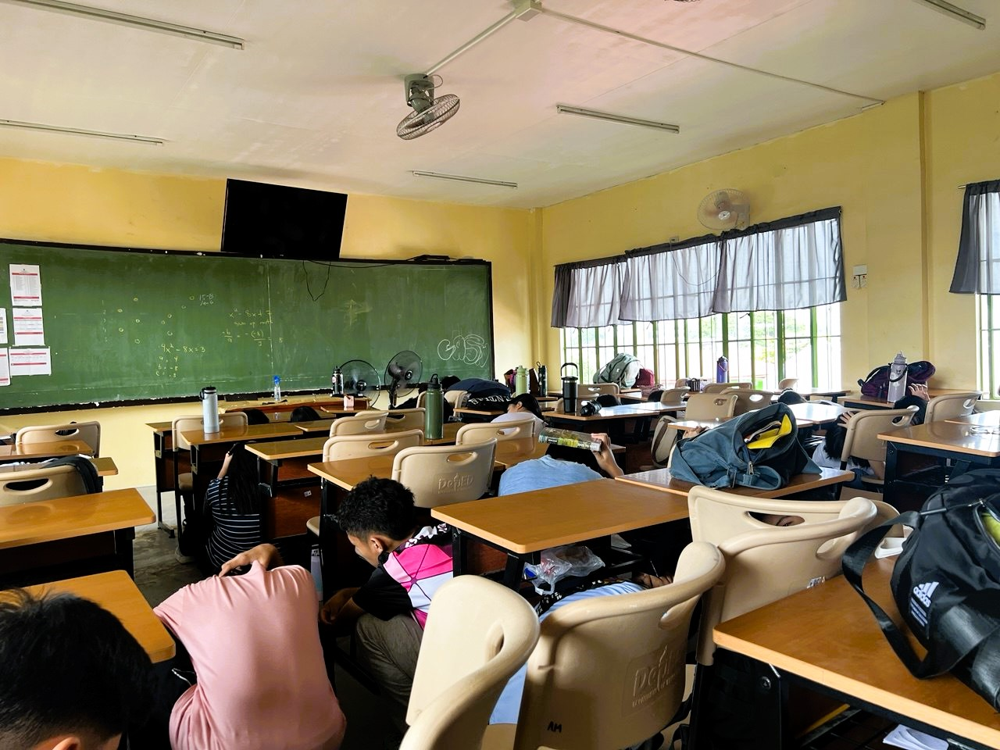
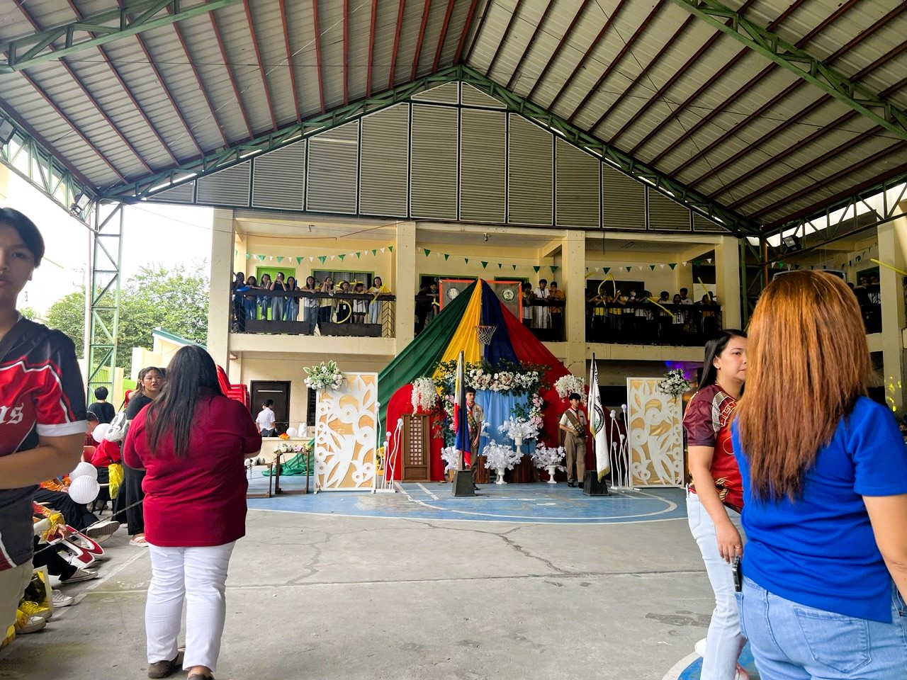
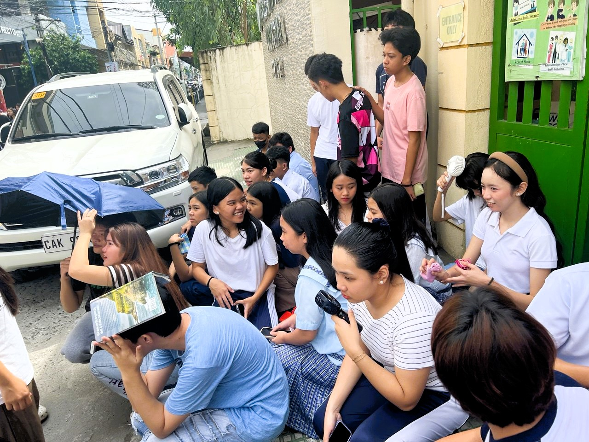
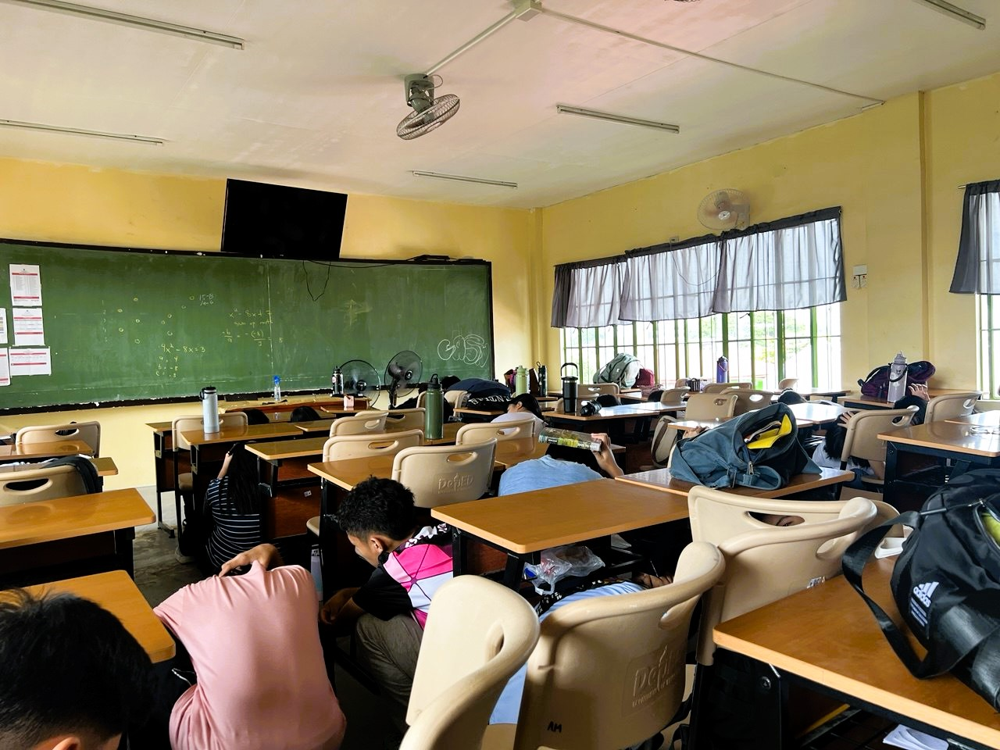
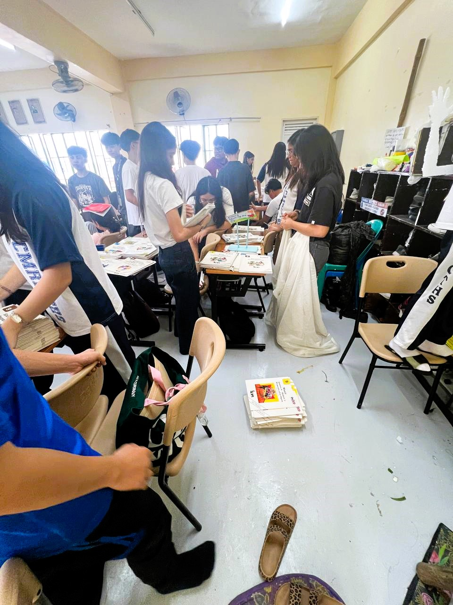
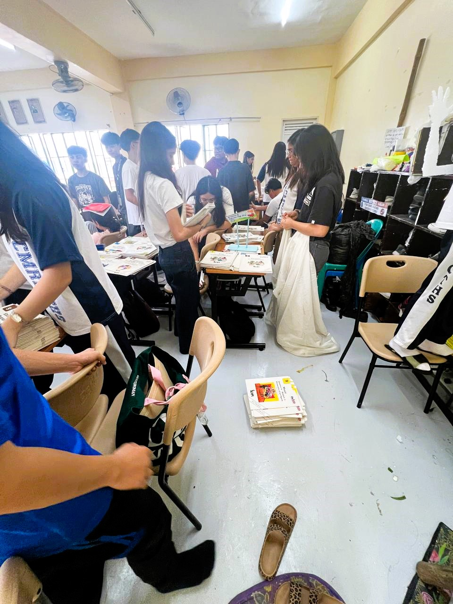

Introduction
This e-portfolio captures my journey as a practice teacher and observer, emphasizing my growth, experiences, and insights gained during this important phase of my academic life. It includes my expressions of gratitude in the Acknowledgements section, a summary of my personal and educational background in the Biography section, and reflections on my changing views about teaching and learning. Additionally, it contains my Certificate of Completion, a collection of worksheets and certificates that highlight my involvement and successes, and supporting evidence of my activities.
The Reflection section offers a thoughtful look at the lessons and challenges that have contributed to my development as a future educator. More than just a set of documents, this e-portfolio symbolizes my commitment to becoming a caring and effective teacher, reflecting the values and lessons I plan to bring to my future classroom.
Acknowledgments
First and foremost, I express my deepest and sincerest gratitude to my professors at Angeles University Foundation. I am especially thankful to our adviser and Field Study professor, Dr. Christiandon Aviado. You have shown endless patience, understanding, and dedication despite your busy schedule. Your guidance and wise insights have been a steady light throughout this journey, helping me grow as a student and a future educator. I am truly grateful for your support every step of the way.
I also want to thank our Social Studies professors. Your encouragement and direction have helped me stay on the right path in choosing this specialization. Your belief in our potential has motivated me to continue striving for excellence, and I am thankful for the knowledge and inspiration you have shared.
A special thank you goes to my cooperating teacher, Mrs. Nina Catherine Pamintuan, who warmly welcomed me into Claro M. Recto Information and Communication Technology High School. Your mentorship and generosity in sharing your experience have greatly enriched my teaching journey. Thank you for your constant encouragement and for taking the time to guide me through the practical challenges of teaching. Your support has been invaluable and has made a lasting impact on my growth as an educator.
To my family, especially my parents, Cristal D. Pangilinan and Jhoal L. Pangilinan, and my little brother, thank you from the bottom of my heart for believing in me from the beginning. Your unconditional love, patience, and understanding allowed me to chase my dreams without feeling pressured. Your support gave me the confidence and strength to keep going, even when things felt difficult.
To my “strongest soldier,” pips from the Social Studies group, thank you for making my college life bearable and even fun. The trips we shared during those long six-hour breaks, especially the memorable Subic trip, and the simple gatherings to celebrate birthdays created moments of joy and relaxation that I will always treasure. You made the tough times easier with your friendship and laughter.
To my college friends Julius, Shereel, Shareena, and Abbygail, thank you for sticking with me through this challenging and stressful academic year. Your companionship, encouragement, and good humor helped me face the demands of this journey with more strength and positivity. Special shout-out to Ate Tricia, Mat, and Biboy—without your support during my internship in ICT, I don’t know how I would have managed. You truly helped me survive and thrive during that time.
To my students—Atanasoff, Iverson, Hull, Perlis, Johanses, Neumann, and Hopper—thank you for allowing me to be part of your learning, even though I know I am still growing in my teaching skills. Your openness and willingness to learn motivated me to do my best, and I am grateful for the opportunity to teach and learn alongside you.
I also want to express my heartfelt thanks to my love, Raven. You have been my rock, especially when I struggled with editing and finishing my assignments. Thank you for staying up late with me to complete homework, observation notes, CBAR, and especially this e-portfolio. I apologize for the moments when I poured my frustrations on you during stressful times. Your patience and support mean more to me than words can express, and I am truly blessed to have you by my side.
Lastly, I want to thank the Almighty God. Your constant presence in my life has been my greatest source of strength and comfort. You never left me during moments of doubt, stress, and uncertainty. I felt your guidance even when lost and unsure of the next step. Your blessings have given me hope, courage, and the peace to continue. I am forever grateful for your endless love and grace.
Thank you to everyone who has contributed to this journey in ways big or small, whether I have named you or not. This milestone would not have been possible without your support, encouragement, and belief in me. Each of you has played a vital role in my growth and success, and I carry your kindness with me as I move forward.
Biography of the Practice Teacher / Observer
Name:
Ashley Dimatulac Pangilinan
Date of Birth:
August 27, 2002
Age:
22
Place of Birth:
Jose B. Lingad Memorial General Hospital, City of San Fernando, Pampanga
Hometown:
Atba, Aftershock, San Vicente, Santo Tomas, Pampanga
Early Life and Family
Ashley Dimatulac Pangilinan was born on August 27, 2002, at Jose B. Lingad Memorial General Hospital in the City of San Fernando, Pampanga. She was raised in a close-knit, religious family in Santo Tomas, Pampanga. As the oldest child of Cristal D. Pangilinan and Jhoal L. Pangilinan, she has a younger brother named Kyler D. Pangilinan.
Her family's strong beliefs have played a significant role in her life. Since 2011, Ashley has been an active member of the Children of Mary Immaculate (COMI), a church group that has helped her grow spiritually and engage more with her church community.
Education
Ashley’s educational journey showcases her motivation and love for learning. She started her primary education at Matinian School Inc. and then attended San Fernando Elementary School. She completed her junior high school at San Matias National High School, where she developed a keen interest in social studies. She attended the University of the Assumption for senior high school to prepare for future academic endeavours.
Currently, Ashley is in her fourth year studying for a Bachelor’s degree in Secondary Education with a focus on Social Studies at Angeles University Foundation. Her dedication to her education is driven by her passion for exploring history, culture, and how societies function.
Personal Interests
Ashley finds solace in reading fictional books, which serve as her refuge and a way to escape the harsh realities of life. These stories allow her to express herself creatively and help her handle her challenges.
Being with her friends and family also brings Ashley joy and helps her relax. Her close connections with loved ones show how much she values important relationships.
Character and Aspirations
Ashley Dimatulac Pangilinan is characterized by a mix of faith, determination, and ambition. Her active participation in her church and commitment to education reflect her balanced personality. She aspires to share her knowledge and experiences to inspire others, teach youngsters, uphold her values, and positively impact society.
Beliefs about Teaching and Learning
As I got ready for my upcoming deployment, I felt excitement and anticipation. I distinctly recalled my time as a student, watching student teachers at our school. They seemed to handle their responsibilities effortlessly, and I often thought their jobs looked simple. I imagined that becoming a high school teacher would be an easy experience, straightforward and predictable.
In my mind, teaching involved various tasks that appeared clear and uncomplicated. I thought I would grasp the educational material so well that memorizing lessons would happen naturally. I envisioned myself carefully preparing PowerPoint presentations to help communicate ideas effectively. Assigning homework seemed easy, as did coming up with fun activities to keep students engaged. I expected that grading assignments would be routine, helping me track students' progress smoothly. I even intended to write detailed lesson plans to ensure each class was organized and meaningful while calculating grades accurately.
I believed that teaching was mostly about sharing knowledge from the teacher to the students. This view made me think that if I could handle all the practical parts of teaching well, the learning would happen without any issues. I was eager to put into practice the skills and theories I had learned during my studies in a real classroom. It was not just about teaching; it was also a chance for me to show my readiness and passion for positively impacting my students' education. I looked forward to the challenge and was excited to dive into the unique setting of high school learning.
Certificate of Completion
Compilations of Worksheets and Certificates
Please select an option to view the details.
Documentary Evidence
 





 



Unexecuted Lesson Plans
Reflection
After experiencing different aspects of teaching, I’ve learned that being a teacher is both challenging and rewarding. It’s a demanding job that requires a lot of patience and effort. Teachers' responsibilities extend beyond the classroom, often spilling into their personal time as they spend hours planning lessons, grading work, and meeting deadlines. Balancing all these tasks can sometimes be overwhelming. However, despite the difficulties, teaching is also very fulfilling and enjoyable.
What makes teaching satisfying is the chance to make a real difference in students’ lives. It goes beyond just sharing knowledge; it’s about sparking curiosity, helping students reach their potential, and building connections. Each day in the classroom brings new challenges and rewarding experiences. The happiness of seeing students understand a topic, achieve a goal, or simply revel in feeling supported makes all the effort worthwhile.
Being a teacher also involves continuous learning. Interacting with students offers valuable lessons in understanding others, bouncing back from setbacks, and thinking creatively. These shared moments create a special connection between teachers and students, making the teaching experience as rewarding for educators as it is for learners.
This awareness drives me to pursue excellence, knowing my work helps shape future generations. The saying “lagi’t lagi para sa bata at sa bayan” (always for the child and the nation) truly connects with me. It shows that teaching is not just a job but a promise to support a bigger cause. It’s about nurturing growth, providing strength, and inspiring hope for a brighter future for both students and teachers.